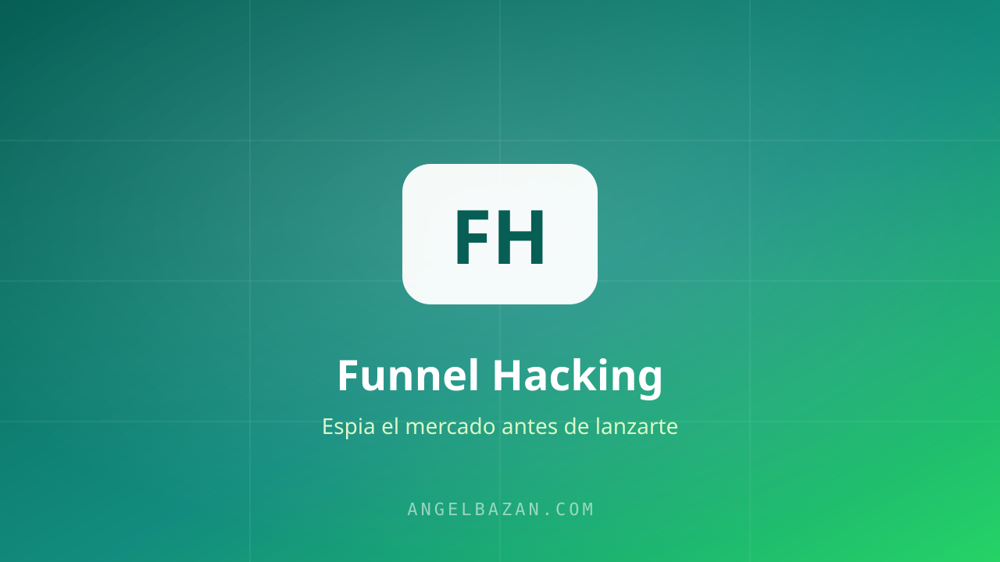

Qué es el funnel hacking y por qué cambió mi forma de vender por internet
Qué es el funnel hacking, de dónde viene y por qué espiar embudos que ya funcionan es la forma más inteligente de vender por internet sin reinventar la rueda.
En este artículo
- Qué es el funnel hacking (la definición sin rodeos)
- De dónde viene el funnel hacking
- El principio que lo sostiene: no reinventar la rueda
- Observar el mercado antes de lanzarte
- Las dos habilidades que desarrollas haciéndolo
- Modelar no es copiar: tu propia salsa secreta
- Cómo se hace en la práctica con WhatsApp y Meta Ads
Cuando empecé en este mundo, yo era de los que reinventaba la rueda. Probaba, probaba y probaba esperando que llegaran los resultados, y los resultados se tardaban un montón porque me había metido por el camino más largo de todos. El funnel hacking fue lo que cambió las reglas del juego para mí. En este artículo te explico exactamente qué es, de dónde viene y por qué es la forma más inteligente de vender por internet.

Qué es el funnel hacking (la definición sin rodeos)
El funnel hacking es el proceso de observar el mercado, analizar los embudos que ya están funcionando y partir de ellos para crear el tuyo. En vez de lanzarte con una idea que se te ocurrió, estudias lo que ya le está dando resultados a otras personas y lo modelas con tu propia salsa secreta.
Dicho fácil: es espiar el mercado con ojo de espía antes de lanzarte. Ver quién ya se tiró al agua y preguntarle cómo le fue, en vez de saltar a ciegas.
De dónde viene el funnel hacking
El concepto viene del mundo del marketing estadounidense, popularizado por Russell Brunson, que tiene varios libros muy buenos sobre el tema y un evento llamado Funnel Hacking Live. La idea de fondo es simple y poderosa: en vez de crear desde cero, partes de embudos probados y los adaptas a tu negocio.
El principio que lo sostiene: no reinventar la rueda
Nada se crea de la nada. Las cosas ya están inventadas; lo que existe es la mejora de la mejora de la mejora. Nos inspiramos en lo que ya anda y le ponemos lo nuestro.
Y esto no es trampa ni atajo barato: lo hacen las empresas más grandes del mundo. Cuando TikTok popularizó el video vertical corto, Instagram y YouTube lo copiaron. Cuando ChatGPT pegó con el chat, salieron Gemini, Grok y los demás. Las plataformas se copian entre ellas todo el tiempo, cada una con su mejora. Si los gigantes parten de lo que ya funciona, nosotros también podemos.
Observar el mercado antes de lanzarte
Me gusta explicarlo con una analogía. Imagina que vas a meterte al mar. Hay dos tipos de personas:
- Las que se tiran sin preguntar nada, sin saber si hay corriente, si hay peces, si el agua está buena. Muchas terminan saliendo del agua diciendo "esto no funciona".
- Las que primero observan, le preguntan a quien ya se tiró cómo le fue y dónde están los peces. Esas se lanzan con criterio.
El funnel hacking es ser de los segundos. Parece obvio, pero la gran mayoría se lanza a ciegas, por urgencia o porque les vendieron otra idea. Observar primero es justo lo que marca la diferencia entre quien tiene resultados y quien no.
Las dos habilidades que desarrollas haciéndolo
- Detectar patrones: cuando ves muchas ofertas y embudos, empiezas a reconocer qué se repite en lo que funciona. Esa capacidad te deja aprovechar oportunidades que otros no ven.
- Crear tus propios patrones: después de ver, probar y fallar lo suficiente, llega un punto en que generas tus propias ideas ganadoras. Pero eso viene con el tiempo y la experiencia, no antes.
Modelar no es copiar: tu propia salsa secreta
Aquí es donde mucha gente se confunde. Funnel hacking no es clonar el producto de otro tal cual. Es identificar la estructura que funciona (el ángulo, el mecanismo, el tipo de embudo) y replicarla agregándole lo tuyo. La réplica con tu propia salsa secreta.
Cómo se hace en la práctica con WhatsApp y Meta Ads
La teoría está clara, pero el funnel hacking se hace con las manos en la masa. El lugar donde yo espío todo es la Biblioteca de Anuncios de Meta, que te muestra gratis los anuncios que están corriendo ahora mismo con dinero detrás. Mi foco siempre es el mismo: detectar qué embudos mandan a WhatsApp y con qué mensaje convierten, porque el WhatsApp es donde hoy se cierra la mayoría de las ventas en español.

Angel Bazán
Especialista en funnels, Meta Ads y WhatsApp + IA. Ayudo a negocios a vender más combinando tráfico pagado con conversaciones automatizadas.
Conoce más sobre mí →Aprende a crear y vender productos digitales con Meta Ads, WhatsApp e IA
Clases en vivo, estrategias y recursos para construir tu sistema desde cero. 🚀
Únete gratis al grupo